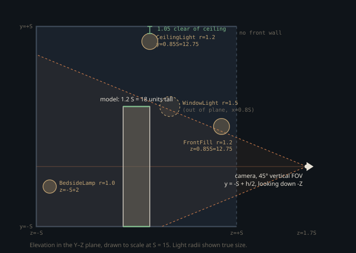

Monograph · Tree · ← Sitemap · Scene framer
camera
Scene framer
Auto-frame bounds for turntable/model viewer.
Fitting the model to the room, not the room to the model
An asset arrives with no unit convention: a scanned head is 180 millimetres tall, a CAD part 0.4 metres, a game character 1.8, and the vertex data declares none of it. Everything downstream that is tuned in absolute world units breaks under that variance, and in a path tracer almost everything is — inverse-square falloff, shadow-ray epsilons, sphere-light radii.
`SceneFramer` inverts the usual framing problem. It does not move a camera until the model fits; it fixes a room of half-size 15 world units — unconditionally, despite a call-site comment claiming the room adapts — and rescales the model into it:
float S = 15.0f;ohao/render/camera/scene_framer.cpp:34result.modelScale = (S * 1.2f) / std::max(maxExtent, 0.001f);ohao/render/camera/scene_framer.cpp:39The divisor is the *largest* of the three AABB extents, not the height, so a chess board or a crouching figure is bounded by its widest axis instead of overflowing sideways. The result: whatever came in, its longest dimension leaves as 18 units — 60% of the room's 30-unit span.
The alternative is to keep the model at native scale and move the camera and lights out to meet it. That fails on the light rig: the four studio lights below carry intensities in the 150–800 range chosen for distances of order S, and irradiance falls as 1/d². Re-fitting a millimetre asset would need every intensity rescaled by d² and every sphere radius shrunk too — a 1.2-unit lamp near a 0.18-unit model is a lamp the model stands inside. Normalising the geometry is one multiply; normalising the lighting model is a per-asset tuning session. The cost is that the framer owns the model transform: nothing can render an asset at its authored scale through this path.
Guessing which way is up from a bounding box
Nothing in a raw vertex buffer says which axis is up, so the framer infers it from the box's aspect: if the Y extent is at least the Z extent, treat the model as Y-up.
bool isYUp = forceYUp || (extent.y >= extent.z);ohao/render/camera/scene_framer.cpp:26Y-up models get the identity rotation. Z-up models get ±90° about X, and the sign is decided by a second inference — whether the model's Z range reaches above zero:
posZIsUp = (bmax.z > 0.01f);ohao/render/camera/scene_framer.cpp:55A DCC export whose Z span is entirely negative has its head at negative Z, so it needs +90° — which maps z → −y, lifting −Z to +Y — rather than the −90° a standard +Z-up model needs. The two Z-up branches mirror each other exactly, because the rotations do: −90° about X sends (x, y, z) to (x, z, −y), so the feet come from `bmin.z` and the depth re-centring term is `+center.y * scale`; +90° sends it to (x, −z, y), so the feet come from `bmax.z` and the same term is negated.
result.modelPosition = {-center.x * scale, -S + feetOffset, center.y * scale};ohao/render/camera/scene_framer.cpp:61result.modelPosition = {-center.x * scale, -S + feetOffset, -center.y * scale};ohao/render/camera/scene_framer.cpp:65All three branches land the model identically — feet on the floor at y = −S, AABB centre on x = 0 and z = 0 — which is the invariant the camera solve leans on.
The heuristic's failure mode is exact and easy to hit: a Y-up model that is deeper than it is tall — a car, a ground plane, a sofa — reads as Z-up and gets tipped onto its face. The upright DamagedHelmet is one: 1.80 tall, 2.00 deep. So the heuristic is skipped for the one format where the answer is known a priori, since the glTF specification mandates Y-up. The `Model` overload passes `forceYUp` for a `.gltf` or `.glb` source, and `isYUp` gives hosts that place a model themselves (`env_demo`, `turntable`) the same answer:
return computeFraming(model.vertices, isGltf(model));ohao/render/camera/scene_framer.cpp:122if (isGltf(model)) return true;ohao/render/camera/scene_framer.cpp:126Every caller passes a `Model`: `model_viewer`, `scene_tests` and `scene_view_gpu_test`. The extent test still decides for OBJ and FBX.
The camera solve has two free numbers
Two quantities in the camera solve are derived from the model: its mid-height and, for a model too deep to fit, the distance. The rest is literal — x = 0, the 45° FOV and both rotation angles.
float modelHeight = isYUp ? extent.y : extent.z;ohao/render/camera/scene_framer.cpp:29result.cameraPosition = {0, modelCenterY, std::max(S * 1.7f, frontZ + fitDistance)};ohao/render/camera/scene_framer.cpp:82`modelHeight` is the extent along the *up* axis, so after the rotation above it is the world-space height, and the camera sits half of it above the floor at y = −S — exactly where the model's own AABB centre landed. The fixed orientation is therefore not a shortcut with a failure mode but the look-at solution written out: `setRotation(0, −90)` points down −Z, and every model's centre is already on x = 0, z = 0 at the camera's own height, so that axis passes through it whatever came in.
camera.setRotation(0.0f, -90.0f);ohao/render/camera/scene_framer.cpp:138The 45° FOV is vertical, since it reaches the projection through `glm::perspective`, whose first argument is a vertical field of view:
projectionMatrix = glm::perspective(glm::radians(fov), aspectRatio, nearPlane, farPlane);ohao/render/camera/camera.cpp:44That makes the resulting frame fill computable in closed form. With $h$ the model's world-space height after scaling, $d$ the camera-to-model distance and $\theta$ the vertical FOV, the fraction of frame height the model covers is
The room half-size $S$ cancels — the framing is scale-free, and the only thing the value 15 actually decides is the unit system in which the light rig is tuned. Two assumptions are buried in that 0.85: that the model's longest axis is its up axis, so $h = 1.2\,S$; and that its silhouette is planar at the model centre, so $d = 1.7\,S$ across all of it. A model as deep as it is tall breaks the second — 18 units of depth centred on z = 0 puts the near face at $d = 16.5$, where 18 units of height subtend $18/(2 \cdot 16.5 \tan 22.5^\circ) \approx 1.32$ of the frame and overflow it. So the framer measures the near face: it places the eight corners of the bounds, takes the largest z, and backs the camera off until the height plus 10% fits the field of view there,
which leaves every model that already fit where it was. The upright DamagedHelmet (16.2 units tall, its face at z = 9.0) puts the camera at z = 30.53, and its nearest corner fills 0.91 of the half-frame (`sp2b_t04` in `scene_tests`).
const float fitDistance = 1.1f * scaledHeight * 0.5f / std::tan(glm::radians(result.cameraFov * 0.5f));ohao/render/camera/scene_framer.cpp:81The distance puts the camera at z ≥ 25.5, *outside* the room's z = +S = 15 wall. `model_viewer`'s room builder, `buildModelViewerScene` in `examples/example_scenes.hpp`, accommodates that by not building a front wall at all:
// wall: the camera looks in from outside.examples/example_scenes.hpp:157`model_viewer` does not call `applyCamera`. Its builder copies the framed position and FOV onto a `Camera` entity, which the host applies through `applySceneView`; `scene_view_gpu_test` renders that path against a hand-applied `applyCamera` and checks the two agree, and is the only caller `applyCamera` has. The windowed host `ohao_game` calls neither function: it loads `assets/scenes/helmet_game.scene.json`, which holds the framer's output for the helmet as data — the same front-less bedroom, the four-light rig, and the camera entity (with a `FlyController`) at the helmet's framed distance:
"Transform": { "position": [0, -6.891139, 30.534174] },assets/scenes/helmet_game.scene.json:20A change to the framer therefore reaches `ohao_game` only when that file is rewritten. No program builds the z = +S wall that the camera sits behind.

Why three of the four light radii are argued for
The four-light studio rig is emitted as sphere lights with radii of 1.2, 1.5, 1.0 and 1.2. Three of the four carry a comment doing the arithmetic against the wall they face — a 1.2-radius sphere at y = 0.85 S sits at 12.75 with its top at 13.95, clear of the ceiling at 15.
{"CeilingLight", {0.0f, S * 0.85f, 2.0f}, {1.0f, 0.92f, 0.82f}, 800.0f, 1.2f},ohao/render/camera/scene_framer.cpp:95The fourth is asserted rather than derived. `BedsideLamp` gets no arithmetic and names no wall — only a parenthetical that it is already interior:
// Bedside lamp — warm point light on the nightstand (already interior).ohao/render/camera/scene_framer.cpp:99It does clear the walls, and it fails on the furniture. `model_viewer`'s room builder adds a nightstand, its top face at $y = -S + 1.5 \cdot 0.25\,S = -9.375$ over $z \in [-15,-12]$; the lamp sits at $y = -S + 6 = -9$ with radius 1.0, so the sphere's lower cap is 0.625 units inside the solid it is meant to light — the exact configuration the other three comments exist to rule out.
box("Nightstand", {nsX, -S, -S}, {nsX + 3.0f, -S + bedH * 1.5f, -S + 3.0f}, {0.22f, 0.14f, 0.07f}, 0.45f);examples/example_scenes.hpp:182Those radii travel intact. `spawnFramedLights` makes each one a point-light entity whose `radius` is the framer's number, and the light table copies that radius into the RT light record's `dirAndParam.w`, which the path tracer reads as a point light's sphere radius.
float dirParam = d.radius;ohao/render/scene/light_table.cpp:156The reason the clearances matter is visible in the next-event estimator of the profile that renders these rooms. `RenderMode::RTOffline` selects `RTOfflineRenderer`, whose `PathTracer` takes the default shader set: the reference path tracer, `rt/path_tracer.slang`.
PathTracerShaderSet{}) {} // the reference path tracer (rt/path_tracer.slang)ohao/render/rt/rt_profile_renderer.hpp:194For a sphere light that raygen samples a direction uniformly inside the cone the sphere subtends from the shading point, and the radiance it carries is the sphere's:
Here $I$ is the authored intensity, $c$ the colour, $r$ the sphere radius, $d$ the distance from the shading point to the sphere's centre and $W$ the range window. Integrated over the cone, $L_e$ times the cone's projected solid angle is $I\,c\,W/d^2$ for a receiver facing the light at $d \gg r$: brightness is radius-independent, which is the fact the framer's comments rely on. A radius can be shrunk to clear a wall without changing exposure; only shadow and highlight sharpness change.
Both factors stay bounded as a receiver approaches the sphere — $L_e$ is a constant and $1/p$ is at most $2\pi$ — so a nearby wall does not draw unbounded samples. What the estimator cannot do is light a point inside the sphere. There the cone is undefined and the sample is dropped:
if (sin2 >= 1.0) return s;shaders/rt/path_tracer.slang:276If a light sphere pokes through a wall, the wall texels inside it get no light sample, and the camera sees the light's emitter mesh, a bright sphere of radiance $L_e$, cut by the wall. The offline profile has no clamp either way: `kOfflineRTSettings` leaves `enableFireflyClamp` false, so the push-constant flag is never set and the luminance clamp at the end of the path is never entered.
.enableFireflyClamp = false,ohao/render/rt/rt_settings.hpp:44The light radii are geometry, not aesthetics. The only way to keep every light sphere's light on the surfaces around it, and its emitter mesh out of them, is to keep every sphere strictly inside the room — and *which* surfaces bound the room is per-caller: `model_viewer` and the scene file `ohao_game` loads build a floor, a ceiling and the back and side walls, and neither builds the z = +S wall that `FrontFill`'s comment measures against. Moving a light "a bit closer to the ceiling" is a rendering bug, not a lighting tweak.
Contracts
- Light positions are not multiples of `S`. `CeilingLight` carries an absolute z = 2, `WindowLight` an absolute y = 3 and z = 5, and `BedsideLamp` is affine throughout (`S*0.55`, `-S + 6`, `-S + 2`). Only the single wall-facing coordinate of the three commented lights — `S*0.85`, `S*0.8`, `S*0.85` — is a plain multiple, and all four radii are absolute constants. So the clearances hold only while `0.85 S + 1.2 < S`, i.e. `S > 8`; shrinking the room without shrinking the radii pushes `CeilingLight` through `model_viewer`'s ceiling, and `FrontFill` past a z = +S plane that a caller building a front wall would have to respect.
- `cameraPosition` is outside the room: z ≥ 1.7 S = 25.5 against walls at ±S. A caller must either omit the +Z wall — `model_viewer` and `helmet_game.scene.json` omit it — or move the camera.
- Callers must apply all three of `modelScale`, `modelRotation` and `modelPosition`. Scale without rotation lays Z-up assets on their side; skipping position leaves them floating instead of standing on the floor.
- `FrameResult::valid()` only checks that three scalars are positive, has no callers, and returns true for degenerate input: a model that loads with zero vertices leaves the AABB at its ±FLT_MAX sentinels, giving a scale of 18000 and a non-finite position.
- Of the programs, only `model_viewer` calls this; `ohao_game` plays a scene file that holds a fixed copy of its output for the helmet. `turntable`, `cornell_box` and `env_demo` do not. `env_demo` and `turntable` place the model themselves with their own target sizes and ask only `isYUp`, so a change to the up-axis rule reaches them and a change to the scale or camera does not.
- On the failure path there are no lights at all. A hand-built `FrameResult` leaves the `lights` vector empty and `spawnFramedLights` silently spawns nothing.
Source files
ohao/render/camera/scene_framer.cppohao/render/camera/camera.cppexamples/example_scenes.hppassets/scenes/helmet_game.scene.jsonohao/render/scene/light_table.cppohao/render/rt/rt_profile_renderer.hppshaders/rt/path_tracer.slangohao/render/rt/rt_settings.hppohao/render/camera/scene_framer.hppParent hub for the full pipeline narrative; this page is the file-level design unit. Sitemap · hover glossary terms anywhere.